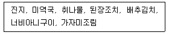
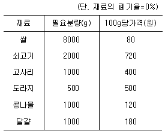
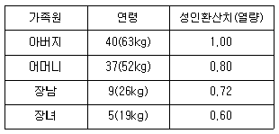

조리기능장 (2002-04-07 기출문제)
1과목: 임의 구분
1. 국가사회나 지역사회의 보건수준을 나타내는 가장 대표적인 지표는?
- 영아사망률
- 모성사망률
- 발병률
- 유병률
(정답률: 91%)

2. 감각온도의 3요소가 아닌 것은?
- 온도
- 습도
- 기류
- 기압
(정답률: 57%)
3. 실내의 자연환기 작용과 관계가 가장 먼 것은?
- 기체의 확산력
- 실내외의 기온차
- 실내외의 습도차
- 실외의 풍속
(정답률: 53%)
4. 위생해충이 매개하는 질병의 연결이 잘못된 것은?
- 파리 - 장티푸스, 이질
- 모기 - 말라리아, 사상충증
- 바퀴벌레 - 콜레라, 장티푸스
- 쥐 - 뎅구열, 황열
(정답률: 77%)
5. 실내의 마루바닥이나 오물 소독에 많이 사용되는 소독약제는?
- 석탄산
- 과산화수소
- 역성비누
- 승홍
(정답률: 65%)
6. 다음 중 환경 오염과 가장 거리가 먼 것은?
- 대기오염
- 수질오염
- 식품오염
- 소음, 진동
(정답률: 74%)
7. 급성 전염병이 발생했을 때 가장 우선적으로 실시해야 할 역학조사는?
- 전염병 확인
- 전파관리 방법
- 전염병 치료법
- 환자의 인적사항
(정답률: 81%)
8. 동일한 병원체에 의해 사람과 동물이 함께 감염되는 인축공통 전염병에 속하는 것은?
- 성홍열
- 탄저
- 디프테리아
- 콜레라
(정답률: 67%)
9. 병원체가 세균(bacteria)이 아닌 것은?
- 콜레라, 한센병
- 성병, 결핵
- 디프테리아, 백일해
- 홍역, 광견병
(정답률: 40%)
10. 집단 감염이 잘 되고 맹장부위에 기생하며 항문 주위에 산란하므로 스카치 테이프로 검사할 수 있는 기생충은?
- 회충
- 십이지장충
- 요충
- 무구조충
(정답률: 67%)
11. 돼지고기의 생식으로 감염되기 쉬운 기생충은?
- 편충
- 폐흡충
- 유구조충
- 요충
(정답률: 82%)
12. 사람의 체온이 42℃ 이상이 되면 어떤 장해가 일어나는가?
- 피부의 염증
- 산소중독증
- 신경조직의 기능마비
- 호흡기계 질환
(정답률: 69%)
13. 식품위생법상 "식품" 이란?
- 의약품 이외의 모든 음식물
- 섭취되는 모든 음식물
- 무해 의약품 및 음식물
- 영양가 있는 모든 음식물
(정답률: 77%)
14. 식중독에 대한 설명이 가장 바르게 된 것은?
- 물로 인해서 발생하는 콜레라 등을 말한다.
- 유해물질이 음식물과 함께 섭취되어 일어나는 장해나 질병이다.
- 일반 전염병과 중독증상의 통칭이다.
- 유독물질에 의한 화학적 장해만을 말한다.
(정답률: 85%)
15. 주방내에 공중 낙하균이 많을 때 일차적인 피해는?
- 식품의 품질을 저하시킨다.
- 식중독을 일으킨다.
- 기생충에 감염된다.
- 전염병을 일으킨다.
(정답률: 67%)
16. 부패되어 신선도가 저하된 어류에서 볼 수 있는 현상은?
- 탄력성이 좋다.
- 아가미가 선홍색이다.
- 물에 담그면 위로 떠오른다.
- 고유의 색깔이 선명하다.
(정답률: 82%)
17. 통조림에 번식하여 용기팽창의 원인이 되는 혐기성 포자 형성세균은?
- 바실러스 서브틸리스(Bacillus subtilis)
- 클로스트리디움 보툴리늄(Clostridium botulinum)
- 바실러스 세레우스(Bacillus cereus)
- 클로스트리디움 니그리피칸스(Clostridium nigrificans)
(정답률: 86%)
18. 곰팡이가 생산하는 유독성 대사물질이 아닌 것은?
- 파툴린(patulin)
- 아플라톡신(aflatoxin)
- 시큐톡신(cicutoxin)
- 오크라톡신(ochratoxin)
(정답률: 75%)
19. 공해병의 일종인 미나마타병의 원인물질은?
- 카드뮴(Cd)
- 수은(Hg)
- 폴리클로리네이티드 비페닐(PCB)
- 비소(As)
(정답률: 65%)
20. 다음 식품첨가물 중 사용기준이 없는 것은?
- 착향용 원료
- 보존료
- 산화방지제
- 밀가루개량제
(정답률: 44%)
2과목: 임의 구분
21. 장염 비브리오균에 의한 식중독 예방법 중 식품 처리시 가장 효과적인 것은?
- 담수 세척 후 냉장고 보존
- 식염수 세척 후 냉장고 보존
- 상온 보존
- 식초액에 보존
(정답률: 64%)
22. 보건복지부장관의 자문에 대하여 식품위생에 관한 중요사항을 조사 및 심의하는 곳은?
- 동업자조합
- 식품공업협회
- 명예식품위생감시원
- 식품위생심의위원회
(정답률: 69%)
23. 식품조리에 있어서 젤(gel) 상태를 이용한 것과 거리가 가장 먼 것은?
- 푸딩
- 휘핑 크림
- 묵
- 양갱
(정답률: 74%)
24. 불 조절에 가장 유의하여야 하는 조리법은?
- 찌기
- 튀기기
- 굽기
- 끓이기
(정답률: 65%)
25. 우족이나 사골을 오래 끓이면 뽀얗게 흰색의 국물이 형성되는데 이러한 현상에 관계하는 것은?
- 인지질(phospholipid) - 유화작용
- 콜라겐(collagen) - 호화작용
- 젤라틴(gelatin) - 유화작용
- 액틴(actin) - 호화작용
(정답률: 65%)
26. 생선이나 고기를 구울 때 석쇠를 먼저 달구는 것은 어떤 원리를 이용한 것인가?
- 지방의 용해
- 단백질의 열변성
- 탄수화물의 호화
- 수분 방출
(정답률: 62%)
27. 다음의 반상차림에 영양소의 균형을 맞추기 위해 추가로 채워 넣어야 할 음식으로서 가장 알맞는 것은?

- 병어조림
- 멸치볶음
- 상추 겉절이
- 장조림
(정답률: 67%)
28. 1번 다시국물을 만드는 방법을 설명한 것 중 잘못된 것은?
- 먼저 다시마 표면의 먼지 등을 닦아 낸다.
- 분량의 물과 다시마를 넣고 센불에서 뚜껑을 닫고 끓인다.
- 남비 바닥에서 거품이 몇 방울씩 떠오르고 다시마가 떠오르면 즉시 다시마를 건져 낸다.
- 완성된 국물은 걸러 낸다.
(정답률: 73%)
29. 식품 구입시 조리 후의 중량 변화도 고려해야 한다. 일반적으로 쌀로 밥을 지으면 약 몇배 정도 중량이 증가되는가?
- 0.5배
- 2.5배
- 4.0배
- 5.5배
(정답률: 71%)
30. 밀가루 조리에 베이킹 파우더를 사용할 때 적합한 것은?
- 강력분
- 중력분
- 박력분
- 준강력분
(정답률: 64%)
31. 전분의 조리시 전분을 분리시키는 요인이 아닌 것은?
- 설탕
- 버터
- 찬물
- 뜨거운 물
(정답률: 60%)
32. 가금류를 조리할 때 고기의 최종 내부 온도는 몇 도까지 도달하여야 하는가?
- 50℃
- 65℃
- 70℃
- 85℃
(정답률: 67%)
33. 육류를 적절히 조리하는데 기본적인 3가지 요건 중 틀린 것은?
- 유연도
- 지방함유량 및 그 분포상태
- 두께 및 크기
- 모양
(정답률: 56%)
34. 족편은 육류의 어떤 성분을 이용하는 조리법인가?
- 마블링(marbling)
- 케라틴(keratin)
- 콜라겐(collagen)
- 엘라스틴(elastin)
(정답률: 82%)
35. 생선구이에 대한 설명 중 부적당한 것은?
- 구이는 생선자체의 맛을 살리는 조리법이다.
- 특히 지방함량이 적은 것일수록 굽는 것이 좋다.
- 생선을 구우면 단백질은 응고하고 수분은 증발한다.
- 비린내 성분은 수분과 함께 생선 외부로 추출된다.
(정답률: 72%)
36. 난백의 기포 생성량에 도움을 줄 수 있는 식품은?
- 기름
- 소금
- 우유
- 레몬쥬스
(정답률: 79%)
37. 사과, 배 등의 절단면에서 일어나는 갈변현상을 막기위한 방법이 잘못된 것은?
- 희석된 소금물에 담근다.
- 껍질을 깎은 후 통풍이 잘 되게 한다.
- 설탕물에 담근다.
- 낮은 온도에 두어 효소의 활성을 억제한다.
(정답률: 57%)
38. 채소를 가열했을 때 불리한 점은?
- 섬유소의 연화
- 탄수화물의 α 화
- 비타민 C의 손실
- 미생물의 살균 효과
(정답률: 82%)
39. 녹황색 채소의 조리방법 중 영양소의 소화흡수상 가장 유리한 것은?
- 기름에 튀기거나 볶는다.
- 물에 데쳐서 양념한다.
- 찜통에 찐다.
- 국으로 먹는다.
(정답률: 34%)
40. 굴을 조린 국물에 소금 등을 넣어 만든 생선간장으로 볶음요리 등에 쓰는 조미료는?
- 하오유(하오油)
- 라유(辣油)
- 화자오(花椒)
- 띵샹(丁香)
(정답률: 62%)
3과목: 임의 구분
41. 식단작성의 기본조건 중 잘못된 것은?
- 균형잡힌 식사가 되도록 영양면에서 고려해야 한다.
- 매일 1끼씩 분식을 하여 경제적인 면에서 지출을 최대한 줄인다.
- 여러 종류의 식품을 사용하여 여러 형태의 맛을 즐길 수 있도록 한다.
- 조리하는 사람의 능력, 식단내용, 조리기구, 주방의 구조 및 설비 등을 고려해야 한다.
(정답률: 65%)
42. 식품의 구입시 감별하는 방법 중 효소의 반응, 효소활성도, 수소이온농도 등을 측정하는 것은?
- 검경적 방법
- 미생물학적 방법
- 물리학적 방법
- 생화학적 방법
(정답률: 38%)
43. 식품 재료의 구입과 불출을 기록할 때 가장 최근에 구입한 식품의 단가가 재고단가로 계산되게 하는 장부 기재방법은?
- 선입선출법
- 후입선출법
- 이동평균법
- 총평균법
(정답률: 50%)
44. 쌀을 저온저장할 때 장점이 아닌 것은?
- 해충에 의한 피해가 적다.
- 호흡에 의한 품질저하가 적다.
- 외관이나 식미가 좋다.
- 수분증대로 인한 중량감소가 적다.
(정답률: 59%)
45. 다음의 냉장, 냉동설비 및 관리에 대한 설명 중 옳은 것은?
- 냉동실 내면에 낀 서리는 칼끝으로 떼어 내거나 뜨거운 물로 녹여낸다.
- 냉장· 냉동실과 주방 바닥의 연결은 수평면이어야한다.
- 냉동실에 식품을 저장할 때 공간을 효율적으로 사용하기 위해 윗면까지 꽉 채운다.
- 정확한 내부온도 측정을 위해 계기는 내부에 부착하는 것이 좋다.
(정답률: 55%)
46. 조리부서의 조직이 바른 것은?
- Chef → Account → Sous-chef
- Chef → Cook → Account
- Chef → Cash → Cook
- Chef → Sous-chef → Cook
(정답률: 74%)
47. 비빔밥 50그릇을 만드는데 필요한 재료량과 각 재료의 100 g당 가격이 다음 표와 같을 때 비빔밥 한 그릇에 드는 재료비는?

- 약 609원
- 약 606원
- 약 590원
- 약 584원
(정답률: 44%)
48. 여러 가지의 제품제조에 공통적으로 발생하는 원가는?
- 직접노무비
- 직접원가
- 간접비
- 직접비
(정답률: 38%)
49. 보험료는 어디에 해당되는가?
- 재료비
- 경비
- 노무비
- 감가상각비
(정답률: 60%)
50. 원가계산상 감가상각비는 다음 중 어디에 포함되는가?
- 월할경비
- 지급경비
- 측정경비
- 발생경비
(정답률: 40%)
51. 식당 운영비목 중 직접비에 해당되지 않는 것은?
- 육류구입비
- 종업원 임금
- 임대료
- 연료비
(정답률: 73%)
52. 다음 가족에게 하루동안 필요한 곡류의 양은 얼마인가? (단, 표준성인의 1일 곡류 필요량은 450g임.)

- 1,804g
- 1,604g
- 1,404g
- 1,204g
(정답률: 50%)
53. 유지의 성질이 잘못 설명된 것은?
- 유지는 물에 녹지 않으나 유기용매에 잘 녹는다.
- 비중은 물보다 가볍다.
- 리파아제(lipase)를 가하면 글리세롤과 지방산으로 분해된다.
- 필수지방산은 동물성 유지에 다량 존재한다.
(정답률: 44%)
54. 분자내에 S-S 결합을 갖는 아미노산은?
- 시스테인(cysteine)
- 시스틴(cystine)
- 라이신(lysine)
- 메티오닌(methionine)
(정답률: 53%)
55. 채소의 향기성분이 아닌 것은?
- 에스테르류
- 알데히드류
- 황화합물
- 카로티노이드류
(정답률: 50%)
56. 껍질을 벗긴 감자의 변색과 가장 관계 깊은 효소는?
- 티로시나아제(tyrosinase)
- 폴리페놀라제(polyphenolase)
- 아스코르비나아제(ascorbinase)
- 퍼옥시다아제(peroxidase)
(정답률: 50%)
57. 쌀에 대한 설명 중 잘못된 것은?
- 쌀의 성분은 도정 정도에 따라 차이가 많다.
- 쌀의 당질 중 50%가 전분이다.
- 쌀의 단백질은 오리제닌(oryzenin)이다.
- 지방은 주로 배아 중에 함유되어 있다.
(정답률: 42%)
58. 다음 중 잘 숙성(熟成)된 쇠고기가 연한 이유는?
- 콜라겐(collagen)이 분해되었기 때문이다.
- 육색소의 분해작용 때문이다.
- 근육섬유의 분해작용 때문이다.
- 지방조직의 분해작용 때문이다.
(정답률: 70%)
59. 액체유에 니켈을 촉매로 수소이온을 첨가하여 고체지방으로 만든 것은?
- 쇼트닝
- 버터
- 마요네즈
- 채종유
(정답률: 56%)
60. 식품의 색, 맛, 방향, 원형 등이 거의 변하지 않으면서 복원성이 좋은 동결건조법에 속하는 식품은?
- 분유
- 콘후레이크
- 당면
- 다시마
(정답률: 53%)